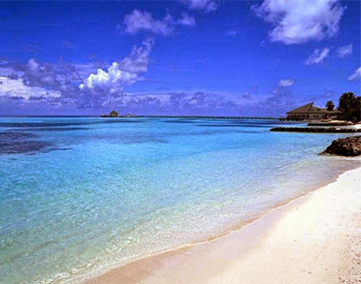
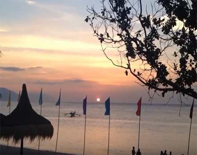
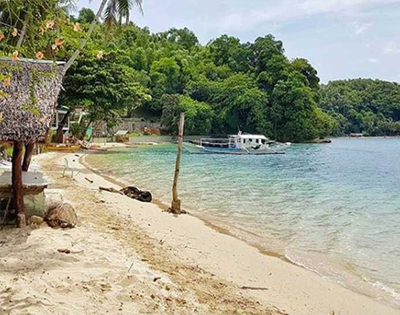
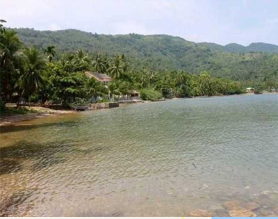

The Best Travel Destinations In Oriental Mindoro
Puerto Galera

Puerto Galera is well known for its beaches, like the White beach and the Sabang beach. For some these
two are the most popular Puerto Galera beaches in Oriental Mindoro here in the Philippines.
But aside from this two there’s actually a lot more of Puerto Galera or should I say Oriental Mindoro
beaches that others don’t know about or talk about very often.
Activities
|
∗ Swimming
|
|
∗ Snorkeling
|
|
∗ Banana boats
|
|
∗ Scuba diving
|
|
∗ Sailing
|
Haligi Beach

Haligi Beach is located on an island near Puerto Galera, from the White beach it will be a 20 mins boat ride to the beach.
The fine white sand and the crystal clear water will satisfy you upon reaching this beach. Perfect for swimming and snorkeling in any
direction and fun for collecting colored stones for souvenirs.
Aninuman beach

Aninuan Beach Five minutes away from White beach is where you can see the Aninuan beach. After hiking from the Aninuan Falls
come and visit the beautiful Aninuan beach. Compared to the other Puerto Galera beaches this one is more private.
You’ll have a peaceful moment while sitting down on the sand under the nipa huts while watching the waves laps on the shore.
Encenada Beach

Encenada Beach Another secluded beach you can visit in Puerto Galera is the Encenada beach. This beach is ideal for its peaceful
surroundings and the great beach for relaxing. The crystal turquoise waters that welcomes you to dive in.
You can reach this beautiful beach within 10 minutes from Sabang by a local tricycle or a motorcycle.
.
Dulangan beach

Dulangan Beach Dulangan Beach is located near the Puerto Galera Town Center. It’s just a 9 minute ride in a local tricycle from
BADLADZ and you’ll be in the beach.
The sand, water, sky and air can ease and give you a sense of calm. You can take a morning walk along the beach and watch the sunrise.
|